타임소프트콘 — 사내 연차 경매 시스템(B2E 연차 경매·에스크로 배당 플랫폼)
본 시연은 단순 기능 시연을 넘어, 다음 두 가지 아키텍처적 차별점을 실제 동작으로 검증한다.
| 항목 | 값 / 확인 방법 |
|---|---|
| 백엔드 | http://localhost:3002 (PORT env) — 기동 로그 "TimesoftCone API listening on :3002" 확인 (별도 health 라우트 없음, 로그인 성공으로 정상 판단) |
| 프론트엔드 | http://localhost:5173 — 로그인 페이지 정상 표시. Vite /api 프록시가 백엔드로 포워딩 |
| 원격 시연 | AnyDesk로 시연 PC 공유 |
| 브라우저 창 배치 | 창 A(Chrome, 사용자1) · 창 B(Chrome 시크릿, 사용자2) · 관리자(Edge, super/exam admin) · ezpass admin(Edge) |
| 시드 적용 | super@admin.local 로그인 성공 = 시드 정상 |
| 시스템 시각 | 12/31 근접 시 배당 스케줄러 자동 발동 위험 → 시연 전 확인 |
| 한글 폰트 / 토스트 | 데모 PC에서 사전 1회 점검 (OUTBID·AUCTION_WON 알림 동작) |
| 역할 | 이메일 | 비밀번호 | 초기 자산 |
|---|---|---|---|
| 최고관리자 (ADMIN · 회사 스위처) | super@admin.local | 로컬 계정 | — |
| ezpass 관리자 (EZPASS_ADMIN) | ezpass 그룹웨어 계정 | ezpass 발급 | — |
| ezpass 사용자1 | user001@timesoftcone.com | ezpass 계정 | 콘 잔액 · REGULAR 연차 = ezpass 동기화 |
| ezpass 사용자2 | user002@timesoftcone.com | ezpass 계정 | 콘 잔액 · REGULAR 연차 = ezpass 동기화 |
| (비교용) EXAM 관리자 — 독립형 로컬 인증 | examadmin@exam.com | 1234 | 액트 3-4·5 멀티테넌트 비교용 |
전체 5막. 기대 결과는 UI 화면 변화와 로직/DB 백엔드·데이터 안전장치로 분리해 기술한다.
| # | 단계 | 예상 입력값 (조작) | 기대 결과 |
|---|---|---|---|
| 1-1 | 로그인 + 대시보드 | 창 A: user001@timesoftcone.com (ezpass 계정) | UI우상단 콘 잔액, 내 연차 위젯 REGULAR 연차(파란 막대) 노출 — 모두 ezpass 동기화 값
로직/DB@timesoftcone.com 도메인 → ezpass 위임 인증으로 자동 라우팅, 로그인 시 회원·연차 동기화 |
| 1-2 | 경매 목록 → 상세 → 입찰 | 경매 목록 → Grid 뷰 → 1일권 매물 클릭 → 30,100 콘 입찰 | UI경매 상세 내 시작가(30,000 콘) 노출, 입찰 후 콘 잔액 즉시 −30,100 차감 반영
로직/DB지갑 차감·에스크로 적립·거래 원장 생성(INSERT)을 단일 트랜잭션으로 처리하여 데이터 무결성 보장 |
| 1-3 | 다른 사용자 덮어쓰기 → 자동 환불 | 창 B: user002@timesoftcone.com (ezpass 계정) 로그인 → 같은 매물 30,200 콘 입찰 | UI창 B 잔액 −30,200 + "최고가 입찰" 토스트. 창 A 새로고침 시 30,100 콘 자동 환불로 잔액 복구 + "덮어쓰기 당했습니다" 알림
로직/DB직전 최고가(창 A)에 30,100 콘 자동 환불을 보상 INSERT로 처리(원장 불변) |
| 1-4 | 즉시 마감 → 낙찰 → AUCTION 연차 | 관리자: super@admin.local → /admin/auctions → 해당 매물 즉시 마감 | UI창 B "낙찰! AUCTION 1일 부여됨" 토스트, 대시보드에 AUCTION 1일(노란 막대) 추가. 잔액 변동 없음
로직/DB낙찰 확정 + AUCTION 연차 로컬 부여를 단일 DB 트랜잭션으로 처리(외부 그룹웨어 호출 없음) |
| 1-5 | 낙찰 연차 사용 (ezpass 연동) | user002 → ezpass(그룹웨어) 휴가 화면에서 낙찰받은 AUCTION 1일로 휴가 신청 | UIezpass 휴가 화면에서 연차 사용 신청·승인 진행 — 기안/승인 워크플로는 ezpass가 소유
로직/DB사용 결과가 본 시스템 연차 잔고에 반영되며, 차감 우선순위 AUCTION → EVENT → REGULAR를 내부에서 보장 |
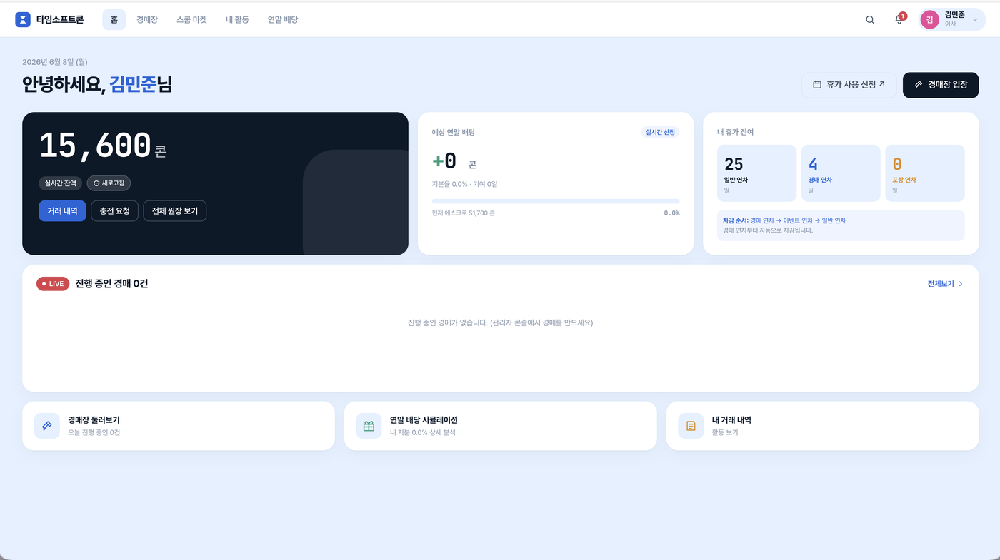
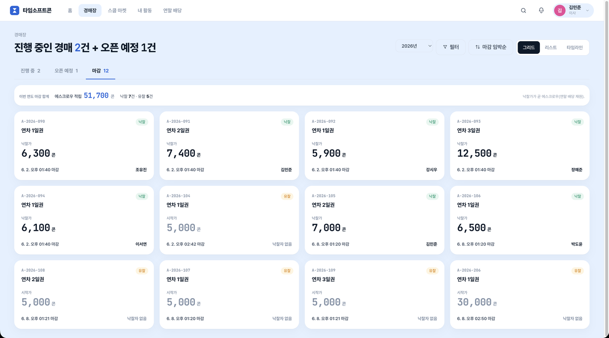
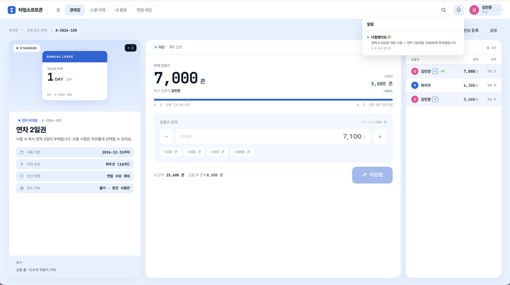
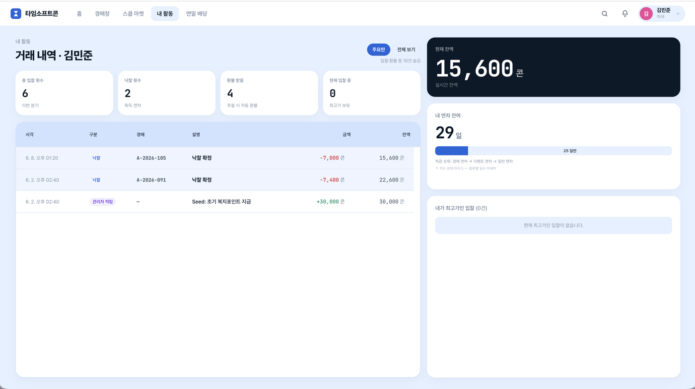
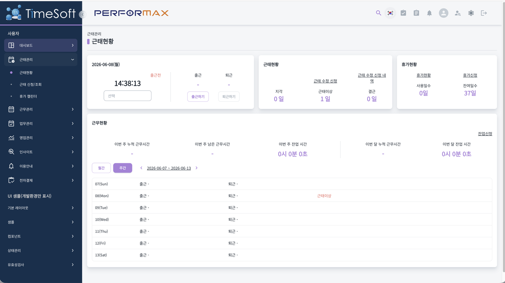
| # | 단계 | 예상 입력값 (조작) | 기대 결과 |
|---|---|---|---|
| 2-1 | 교환 신청 | 창 A user001 → 스토어 → 카카오 10,000원권 → 신청 | UI"교환 신청 완료" 토스트, 잔액 −10,000 콘 반영
로직/DB신청분 10,000 콘 잠금 처리(미승인 상태로 보류) |
| 2-2 | 관리자 승인 + 쿠폰 발급 | 관리자 → 「교환 신청」 탭 → 「대기」 KPI 클릭(필터) → 승인 → 쿠폰코드 KAKAO-DEMO-1234-5678 입력 | UI신청 상태 승인으로 변경. KPI 카드 클릭=필터, 재클릭=해제
로직/DB발급 쿠폰코드 저장 + 승인 이력 기록 |
| 2-3 | 수령 대기 → 수령 완료 → 보관함 | 창 A 새로고침 → 「📦 수령 대기 1건」 카드의 수령 완료 클릭 → 「보관함(N)」 클릭 | UI쿠폰코드 포함 수령 대기 카드 노출, 수령 완료 시 카드 사라짐, 보관함 모달에서 쿠폰 재확인
로직/DB수령 완료 상태 전이, 발급 쿠폰 영구 보존 |
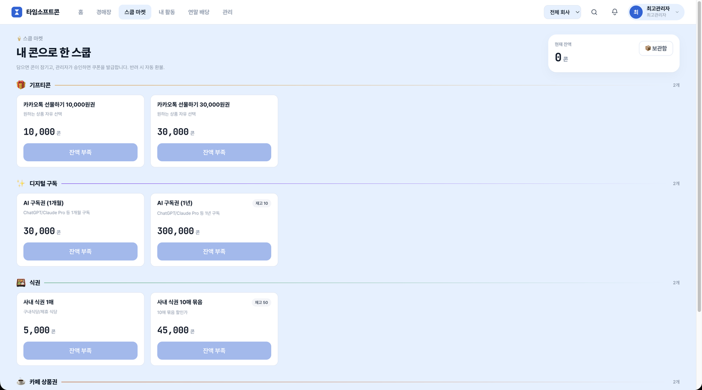
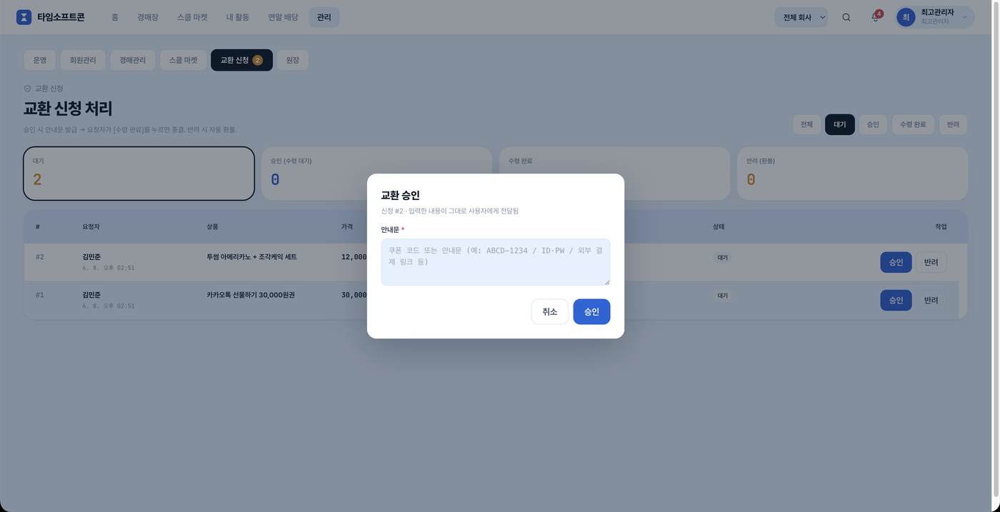
| # | 단계 | 예상 입력값 (조작) | 기대 결과 |
|---|---|---|---|
| 3-1 | 운영 KPI + 내보내기 | super@admin.local → /admin/ops → "정산 데이터 내보내기" | UIKPI 5칸(에스크로·진행·예정·유찰·오늘 낙찰) 표시
로직/DBExcel/MD/JSON 정산 데이터 파일 생성·다운로드 |
| 3-2① | 유찰 매물 처리 — EVENT | "유찰 재고" 카드 → 검색 user003 → 클릭 → EVENT 휴가 지급 | UI"user003에게 EVENT 1일 지급" 토스트, KPI 유찰 −1
로직/DB유찰 매물 → EVENT 연차 전환 부여(REGULAR/AUCTION과 분리) |
| 3-2② | 유찰 매물 처리 — REOPEN | 다른 유찰 매물 → REOPEN 토글 → 마감 시각 입력 → 재경매 | UI"기존 매물 → 새 매물 ID 재오픈" 토스트, /admin/auctions에 새 매물 노출
로직/DB기존 유찰 매물을 신규 경매 인벤토리로 재생성 |
| 3-3 | 스토어 상품 관리 | 「스토어」 탭 → 「상품 추가」 → SKU DEMO-001, "데모 상품", 5,000 콘 → 저장 → 비활성화 토글 | UI표에 행 즉시 추가, 비활성화 시 창 A /redemption 카탈로그에서 상품 사라짐
로직/DB모든 액션을 감사 로그 CREATE/DEACTIVATE로 INSERT-only 기록(사후 조작 불가) |
| 3-4 | 회원관리 두 탭 | /admin/members → EZPASS 탭 ↔ EXAM 탭 전환 | UIEZPASS 탭: 회원추가·작업 컬럼 없음(「지금 동기화」만). EXAM 탭: 회원 추가·행별 수정/비활성 있음
로직/DB위임형(EZPASS)·독립형(EXAM) 회사를 동일 코드의 어댑터 분기로 처리 |
| 3-5 | 충전 처리 (옵션) | EXAM 회원 행 "콘 관리" → +50,000 콘 / 사유 "데모 보너스" → 적용 | UI잔액 즉시 반영
로직/DB원장 CREDIT_ADMIN INSERT(사유 필수 — 감사 추적성 보장) |
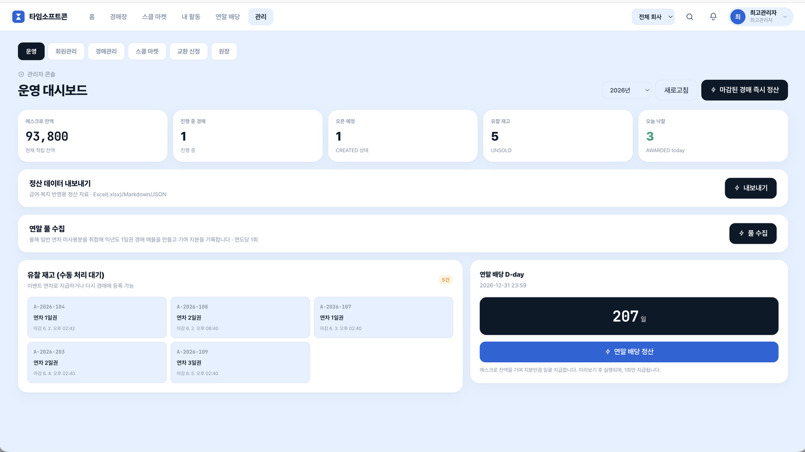
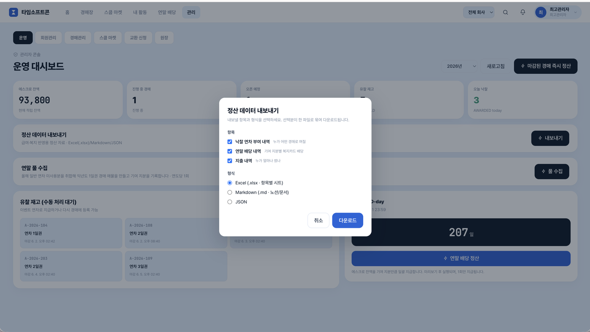
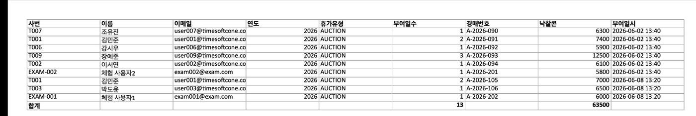
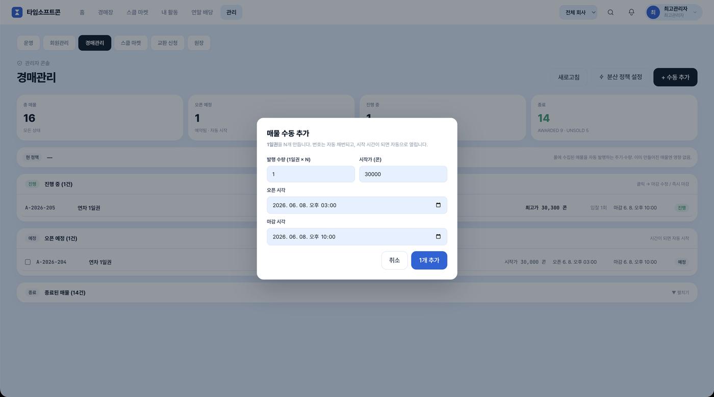
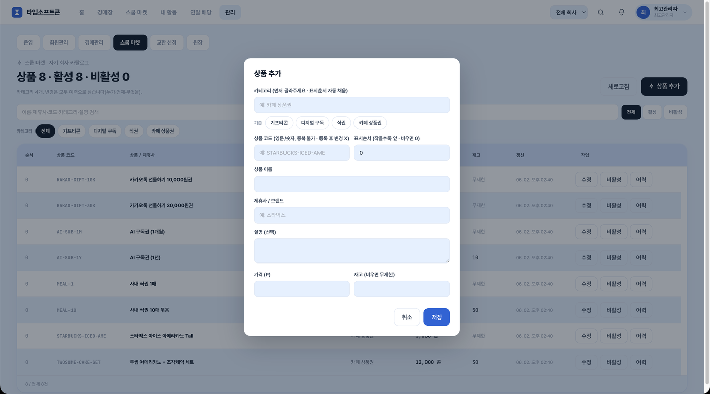
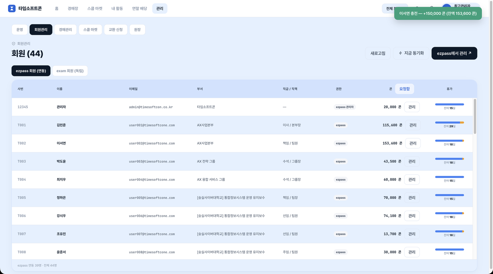
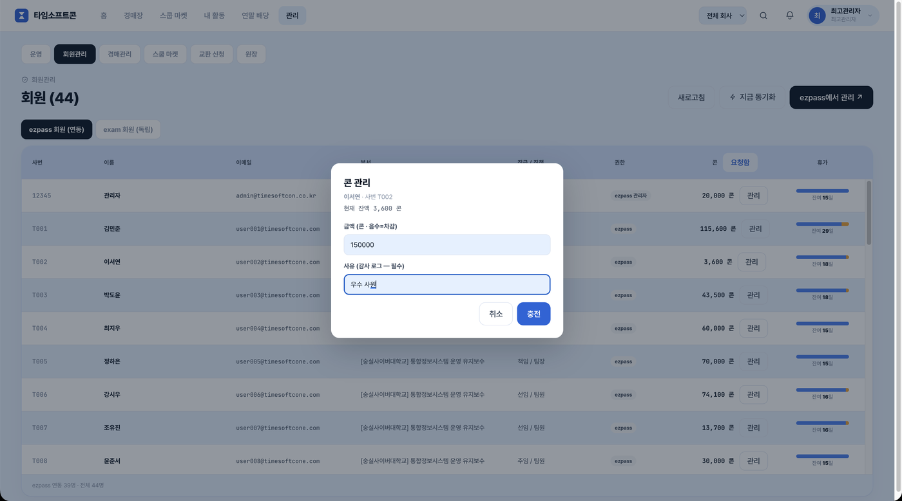
| # | 단계 | 예상 입력값 (조작) | 기대 결과 |
|---|---|---|---|
| 4-1 | 사전 설명 | (구두 설명) 시드에 전년도(2025) 경매 39건 + stake 10명 존재 | — |
| 4-2 | 연말 풀 수집 | /admin/ops → "풀 수집" → dryRun → "수집 실행" | UI기여자별 일수 미리보기, /admin/auctions에 익년도 매물 노출
로직/DBREGULAR 미사용분 → 익년도 매물 N개 생성(LP-2026-*), 연도당 1회 DB UNIQUE 보장 |
| 4-3 | 연말 배당 정산 | "연말 배당" → dryRun 미리보기 → 실지급 | UI시뮬레이션(dryRun) 화면에 기여도별 지분율 명시(user001 30.8%/12일, user002~010 각 7.7%/3일), 배당 완료 토스트 알림
로직/DB누적 에스크로 풀 잔액 전액 배당 처리 완료(에스크로 잔액 0원), 원장에 DIVIDEND 데이터 10건 INSERT |
| 4-4 | 멱등성 확인 | "연말 배당" 한 번 더 실행 | UI재실행 시 정산 거부 안내
로직/DBHTTP 409("이미 정산됨") 반환 — dividend_run.year UNIQUE로 연 1회 중복 정산 원천 차단 |
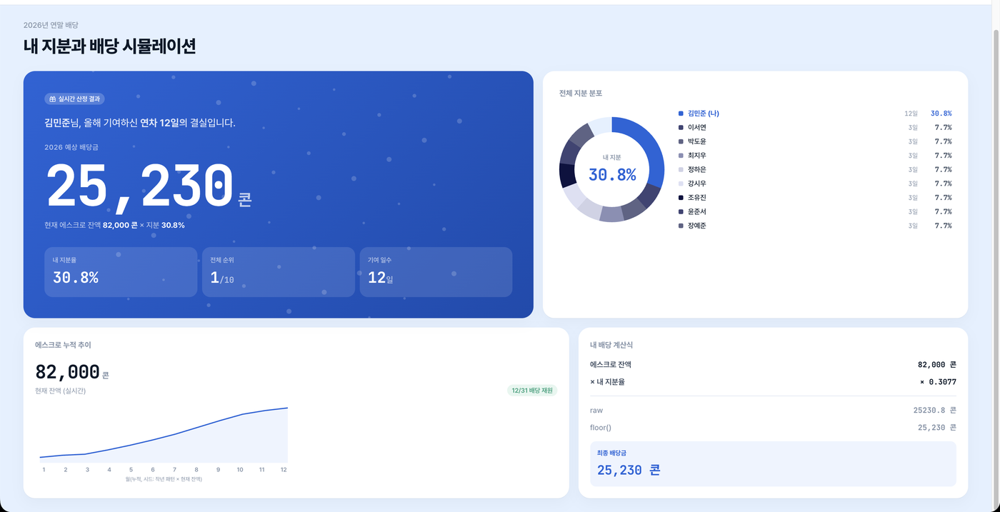
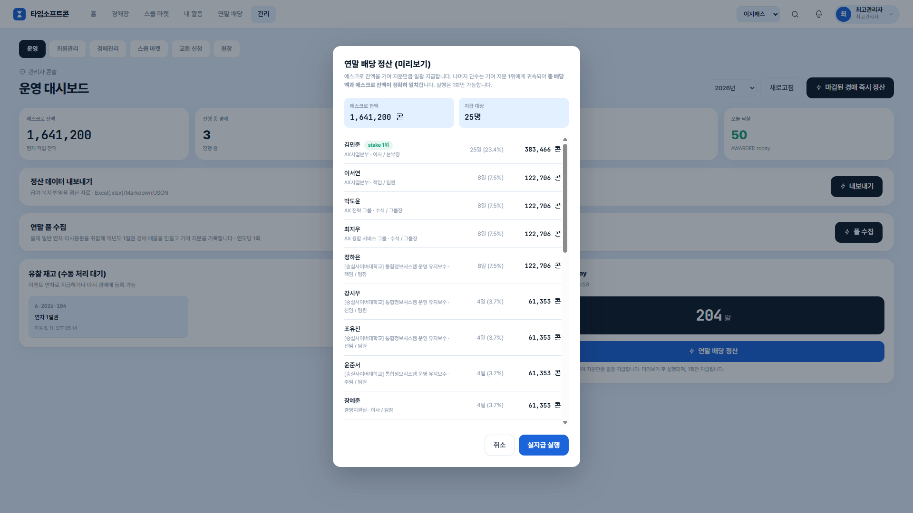
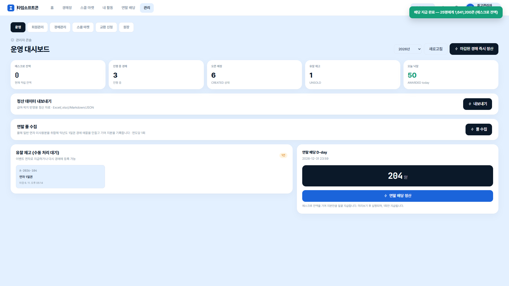
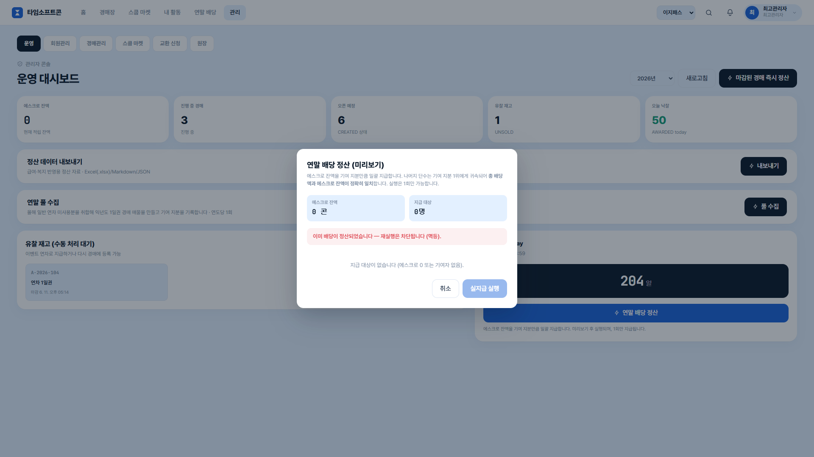
| # | 단계 | 예상 입력값 (조작) | 기대 결과 |
|---|---|---|---|
| 5-1 | 회사 스위처 | super@admin.local → 우상단 스위처 → EZPASS ↔ EXAM 전환 | UI회원·매물·원장·통계가 회사별로 완전히 교체
로직/DB컨텍스트 전환에 따라 데이터 스코프 전체가 회사 단위로 분리 |
| 5-2 | 다른 회사로 직접 로그인 | 새 시크릿창 → examadmin@exam.com → /admin/members | UIEXAM 직원만 표시, EZPASS 데이터 없음, 회사 스위처 미노출
로직/DBJWT companyId가 모든 쿼리에 자동 스코프 — 타 회사 데이터는 조회조차 불가 |
| 5-3 | 신규 회사 추가 (구두 설명) | (구두 설명) company 행 + 사용자 companyId 추가 | UI—
로직/DB코드 변경 0으로 신규 회사 온보딩, 도메인 추가 시 인증 라우팅 자동 적용 |
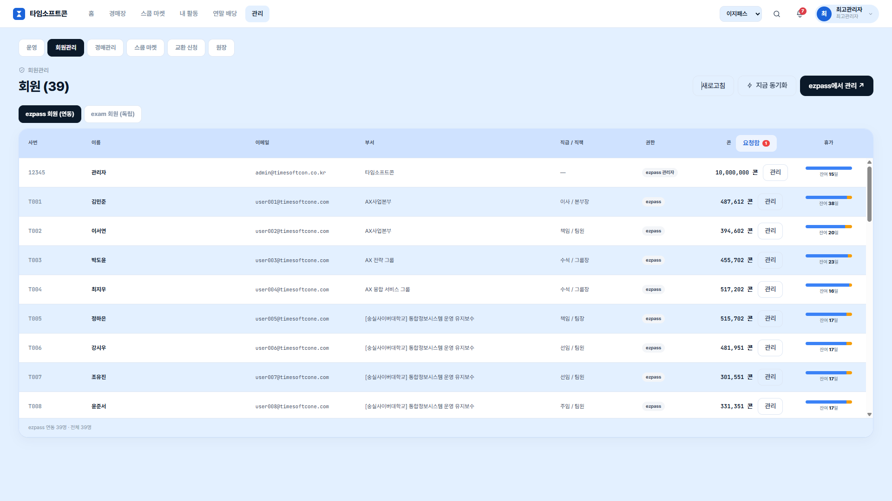
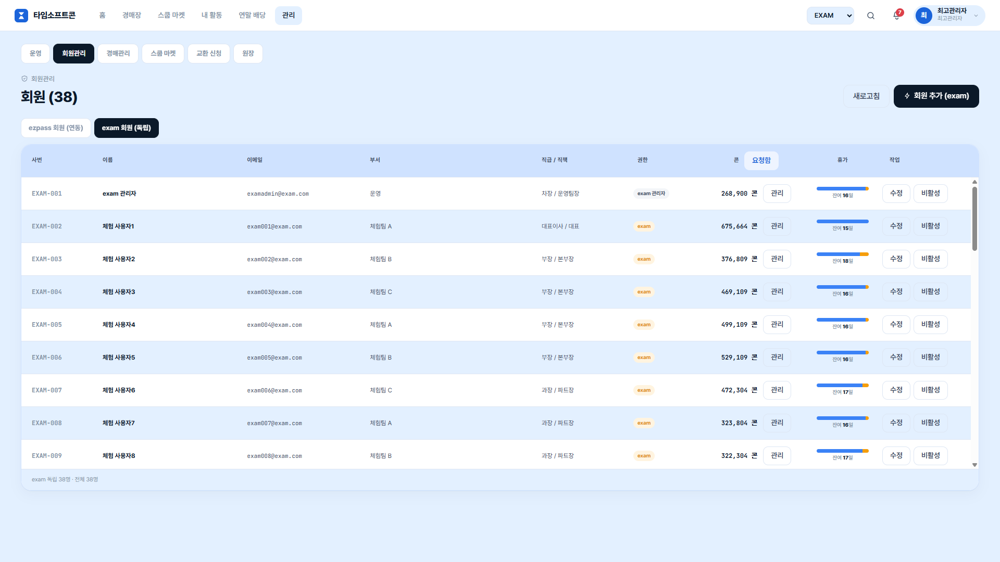
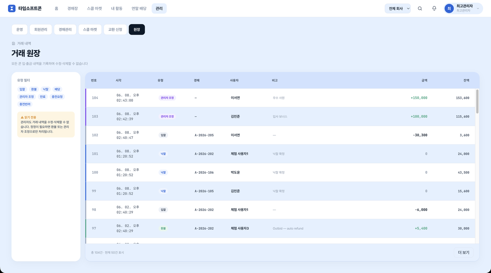
각 시연 단계를 뒷받침하는 검증 증빙(스크린샷)을 사전에 확보하여, 시연 환경 이상 시에도 동일한 결과를 제시할 수 있도록 한다.
각 캡처는 §2의 해당 단계 갤러리에 끼워 표시되어 있으며, 본 표는 코드와 파일명의 1:1 대응을 정리한다. 모든 실물 파일은 docs/05_handover/img/에 보관한다.
| 코드 | 화면 / 의미 | 실물 파일 | 시연 구간 |
|---|---|---|---|
| C-01 | 대시보드 — 잔액 + REGULAR 연차 위젯 | act1-1-dashboard.png | 1-1 |
| C-02a | 경매 목록 (Grid 뷰) | act1-2-auction-list.png | 1-2 |
| C-02b | 입찰 상세 + 낙찰 화면 | act1-2-bid-win.png | 1-2 / 1-4 |
| C-03 | 내 활동 — 환불·낙찰 흔적 | act1-3-activity.png | 1-3 |
| C-04 | EZPASS 사용자 연차 사용 진입점 | act1-5-ezpass-leave.png | 1-5 |
| C-05a | 스쿱 마켓 카탈로그 | act2-store.png | 2-1 |
| C-05b | 관리자 교환 승인 + 쿠폰 발급 | act2-redeem-approve.png | 2-2 |
| C-06a | 관리자 운영 KPI 대시보드 | act3-1-ops.png | 3-1 |
| C-06b | 정산 데이터 내보내기 — 모달 | act3-1-export.png | 3-1 |
| C-06c | 내보낸 정산 XLSX | act3-1-export-xlsx.png | 3-1 |
| C-07 | 경매관리 (유찰 EVENT/REOPEN 진입) | act3-2-auction-mgmt.png | 3-2 |
| C-08 | 스토어 상품 관리 — CRUD + 감사 | act3-3-store-admin.png | 3-3 |
| C-09 | 회원관리 — EZPASS/EXAM 탭 | act3-4-members.png | 3-4 |
| C-15 | 콘 관리 — 사유 입력 + 충전 | act3-5-charge.png | 3-5 |
| C-10 | 사용자 시점 본인 배당 미리보기 (참고) | act4-3-dividend.png | 4-3 보조 |
| C-11a | 관리자 배당 정산 dryRun (지분율 표) | act4-3-dividend-settle.png | 4-3 |
| C-11b | 실지급 완료 — 에스크로 0 | act4-3-dividend-result.png | 4-3 |
| C-12 | 멱등 차단 — "이미 정산되었습니다" | act4-4-idempotent-409.png | 4-4 |
| C-13a | 회사 스위처 → EZPASS (회원 39명) | act5-1-switch-ezpass.png | 5-1 |
| C-13b | 회사 스위처 → EXAM (회원 38명) | act5-1-switch-exam.png | 5-1 |
| C-14 | 거래 원장 — 한글 환불 메모 | act5-ledger.png | 마무리 |
| P-01 | 발표 PPT PDF 백업본 | presentation/TimesoftCone.pdf | 전체 폴백 |
act{막}-{단계}-{설명}.png (예: act4-4-idempotent-409.png). docs/05_handover/img/에 보관하고, 시연 PC 로컬·USB·클라우드 이중 보관.| 예외 상황 | 대응 / 복구 시나리오 |
|---|---|
| 백엔드 다운 | PPT(P-01) 재오픈 → 백업 캡처(C-01~C-15)로 흐름 설명 |
| 즉시 마감 동작 지연 | AWARDED 상태 매물 캡처(C-04)로 대체 제시 |
| 배당 dryRun 빈 화면 | C-12(409 "이미 정산됨")로 전환 → 멱등성 검증 시연으로 활용 |
| 멀티테넌트 화면 미표시 | C-13 또는 헥사고날/ER 다이어그램(presentation/img/)으로 구조 설명 |
| 토스트/알림 미표시 | 해당 단계 캡처(C-03·C-04)로 결과만 제시 |
| 시간 초과 | 액트 3-5(충전)·5-3(신규 회사 설명)부터 생략. 액트 4(연말 배당)는 생략하지 않는다 |